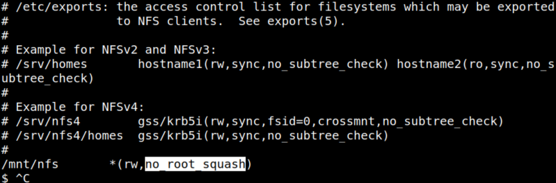

4.2 no_root_squash
1. On your “reverse shell” run.
Output 
You can see that, there is no_root_squash present on the configurations. So, we can exploit this to get the root shell.
NFS no_root_squash/no_all_squash misconfiguration PE Read the /etc/exports file, if you find some directory that is configured as no_root_squash, then you can access it from as a client and write inside that directory as if you were the local root of the machine.no_root_squash: This option basically gives authority to the root user on the client to access files on the NFS server as root. And this can lead to serious security implications. From
https://book.hacktricks.xyz/linux-unix/privilege-escalation/nfs-no_root_squash-misconfiguration-pe.2. Mounting that directory in a client machine, and as root copying inside the mounted folder the “/bin/bash” binary and giving it SUID rights, and executing from the victim machine that bash binary.On your Kali Machine go to the mounted directory.
$cd nfs
$sudo cp /bin/bash .
$sudo chmod +s bash